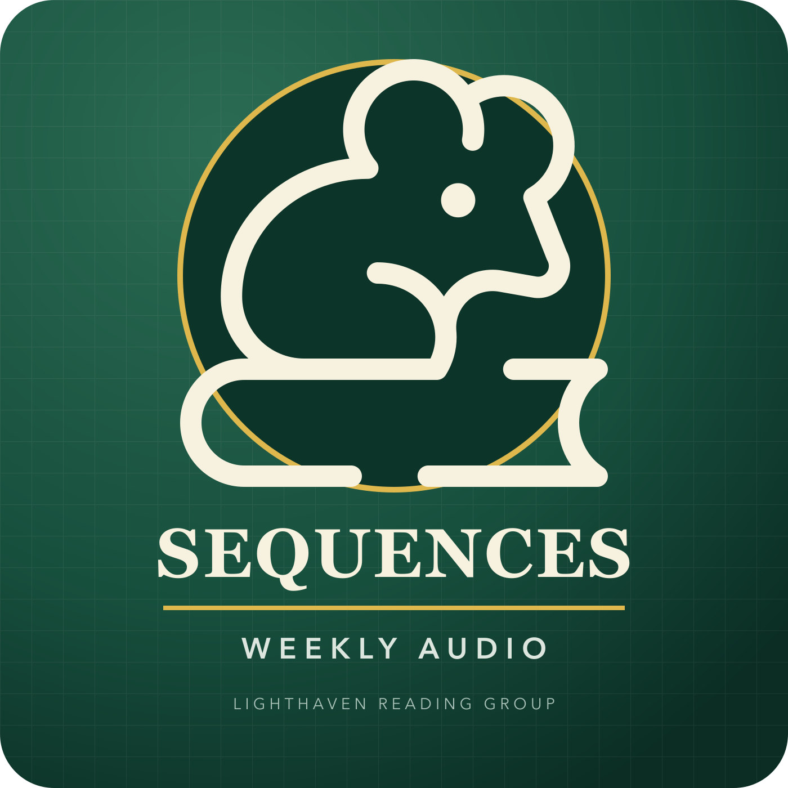

#90
One feed / one weekly packet
Sequences Reading Group Audio
Subscribe once. Each week arrives as one compact episode with chapter markers for every assigned reading.

LSRG #90 / J-4
Tuesday, July 21, 2026
26:31 required audio + 20:33 optional
Manual subscription instructions
Apple Podcasts: Library, More, Follow a Show by URL. YouTube Music: Library, Podcasts, Add podcast, Add by RSS feed. Pocket Casts, Overcast, Podcast Addict, Castbox, and AntennaPod also accept the same URL. To minimize storage, keep only the latest episode or enable removal after playback.
Each weekly packet is one downloadable MP3 with embedded and feed-level chapter markers. Podcast apps control automatic downloads and deletion. Narrations are credited and linked to their sources.